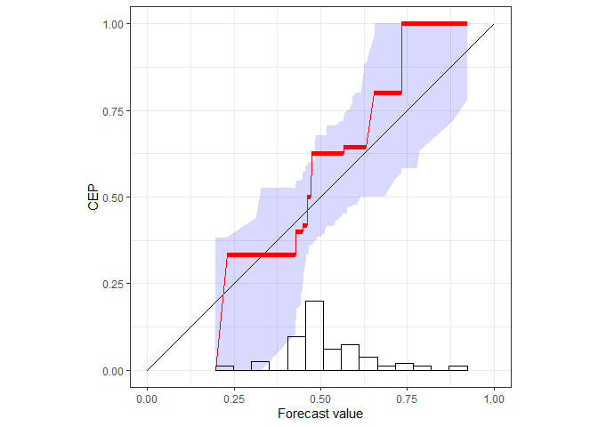

Reliability Diagrams Using Isotonic Regression
Checking the reliability of predictions via the CORP approach, which generates provably statistically Consistent, Optimally binned, and Reproducible reliability diagrams using the Pool-adjacent-violators algorithm. See Dimitriadis, Gneiting, Jordan (2020), available at doi:10.1073/pnas.2016191118.
CORP is based on non-parametric isotonic regression and implemented via the Pool-adjacent-violators (PAV) algorithm - essentially, the CORP reliability diagram shows the graph of the PAV- (re)calibrated forecast probabilities. The CORP approach allows for uncertainty quantification via either resampling techniques or asymptotic theory, furnishes a new numerical measure of miscalibration, and provides a CORP based Brier score decomposition that generalizes to any proper scoring rule.
Installation
reliabilitydiag is available on The Comprehensive R Archive Network (CRAN).
install.packages("reliabilitydiag")Example
library(reliabilitydiag)
data("precip_Niamey_2016", package = "reliabilitydiag")
X <- precip_Niamey_2016$EMOS
Y <- precip_Niamey_2016$obs
reliabilitydiag(EMOS = X, y = Y)